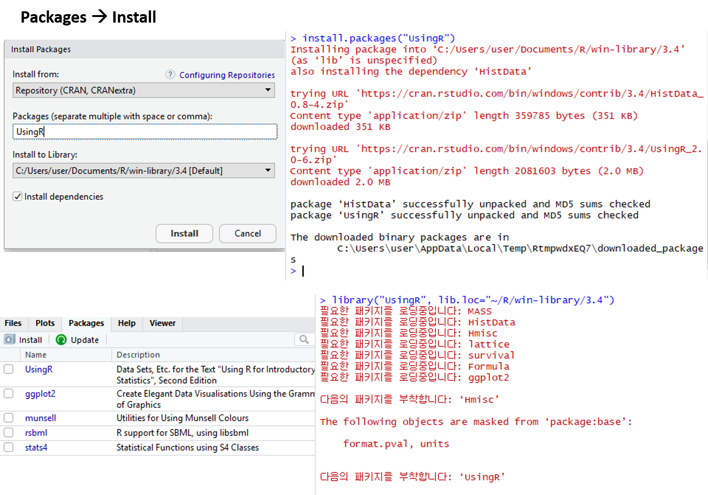

Chapter 2 R basics
2.1 What is R / Rstudio

R은 통계나 생물통계, 유전학을 연구하는 사람들 사이에서 널리 사용되는 오픈소스 프로그래밍 언어 입니다. Bell Lab에서 개발한 S 언어에서 유래했으며 엄청나게 많은 라이브러리 (다른 사람들이 만들어 놓은 코드)가 있어서 쉽게 가져다 사용할 수 있습니다. R은 복잡한 수식이나 통계 알고리즘을 간단히 구현하고 사용할 수 있으며 C, C++, Python 등 다른 언어들과의 병행 사용도 가능합니다. 2019년 top five language에 랭크 되었으며 이는 빅데이터 증가에 따라 인기가 높아진 것으로 볼 수 있습니다 (참고로 2018년에는 7위).

Despite being a much more specialized language than the others, it’s maintained its popularity in recent years due to the world being awash in an ever-growing pile of big data. https://spectrum.ieee.org/computing/software/the-top-programming-languages-2019
R은 통계분석에 널리 사용되는데 이는 데이터 가시화를 위한 그래픽 기능이나 벡터 연산 등의 편리함 때문에 점점 더 많은 사람들이 사용하고 있습니다. 기존에는 느린 속도나 부족한 확장성이 다른 언어들에 비해 단점으로 지적되었으나 R 언어의 계속적인 개발과 업데이트로 이러한 단점들이 빠르게 극복되고 있습니다. R 사용을 위해서는 R 언어의 코어 프로그램을 먼저 설치하고 그 다음 R 언어용 IDE인 RStudio 설치가 필요합니다.


2.2 R / Rstudio installation
2.2.1 R 설치
- R 사이트에 접속 후 (https://www.r-project.org/) 좌측 메뉴 상단에 위치한 CRAN 클릭.
- 미러 사이트 목록에서 Korea의 아무 사이트나 들어감
- Download R for Windows를 클릭 후 base 링크 들어가서
- Download R x.x.x for Windows 링크 클릭으로 실행 프로그램 다운로드 - 로컬 컴퓨터에 Download 된 R-x.x.x-win.exe 를 실행
- 설치 가이드에 따라 R 언어 소프트웨어 설치 완료
2.2.2 Rstudio 설치
Rstudio는 R 언어를 위한 오픈소스 기반 통합개발환경(IDE)으로 R 프로그래밍을 위한 편리한 기능들을 제공해 줍니다.
- 사이트에 접속 (https://www.rstudio.com/), 상단의 Products > RStudio 클릭
- RStudio Desktop 선택
- Download RStudio Desktop 클릭
- RStudio Desktop Free 버전의 Download를 선택하고
- Download RStudio for Windows 클릭, 다운로드
- 로컬 컴퓨터에 다운로드된 RStudio-x.x.x.exe 실행
- 설치 가이드에 따라 설치 완료
2.3 Rstudio interface
- 좌측 상단의 공간은 코드편집창, 좌측 하단은 콘솔창 이며 각 위치를 기호에 따라서 바꿀 수 있습니다.

2.4 Keyboard shortcuts
- 참고사이트
- https://support.rstudio.com/hc/en-us/articles/200711853-Keyboard-Shortcuts
- Tools –> Keyboard shortcut Quick Reference (
Alt + Shift + K)
- 코드편집창 이동 (
Ctrl+1) 콘솔창 이동(Ctrl+2) - 한 줄 실행 (
Ctrl+Enter) - 주석처리 (
Ctrl + Shift + C)- 또는
#으로 시작하는 라인
- 또는
- 실습
- 코드편집창에서 다음 입력

- 단축키
Ctrl + enter로 코드 실행 - 단축키
Ctrl + 2로 커서 콘솔창으로 이동 x값x+y값 확인- 단축키
Ctrl + 1로 코드편집창 이동 - 단축키
Ctrl + Shift + C사용
2.5 R programming basics and terminology
- Console: 명령어 입력하는 창
- Code: R 프로그래밍 변수/제어문 모음
- Objects (개체, variable): 값이 (데이터) 저장되는 장소
- Data types: Integers, doubles/numerics, logicals, and characters.
- Object (Variable) types:
- Vectors: 값들의 모임 combine function c() EX: c(6, 11, 13, 31, 90, 92)
- Factors: 범주형 데이터 저장 장소
- Data frames: 2D matrix 형태 데이터 저장 장소
- Conditionals (조건, 제어):
- if: ==, & (AND), | (OR) Ex: (2 + 1 == 3) & (2 + 1 == 4)
- for, while: 반복 수
- Functions (함수, commands): 특정 일 수행, 함수이름 - 입력값 (arguments) - 출력값 (output) 으로 구성
2.6 Set a working directory
- 시작 전 항상 작업 디렉토리 설정
- 예를 들어 c: 아래 새로운 디렉토리 rstat01 을 만들고 작업공간으로 설정
- RStudio > Session > Set Working Directory > Choose Directory
2.8 Variables and values
- 프로그래밍 언에어서 변수, 값 개념
- Assignment operator (
<-OR=)- Valid object name
<-value - 단축키:
Alt + -(the minus sign)
- Valid object name
- 내장 변수 Built-in variables
- 변수이름 작명법
- 문자, 숫자, “_”, “.” 등으로 구성
- 대소문자 구분
- 가독성, 의미있는 변수 이름
- 길이 제한 없음
i_use_snake_case <- 1
otherPeopleUseCamelCase <- 2
some.people.use.periods <- 3
And_aFew.People_RENOUNCEconvention <- 4- 자동 완성 기능 (Tab completion) in RStudio
2.9 Variable type of (storage) mode

2.10 Variable - Vectors
- Combine function
c(): Concatenating elements end to end
- 인덱싱: Subsets of the elements of a vector
2.11 Functions
- Function 정의
- 사용법
- 용어
- function name:
my_sine - parameter:
x - argument:
pi - return value:
y
- function name:
- R code 스니핏
- 내장 함수 (Built-in functions)
- Tab completion
2.13 Help
- R의 장점 중 하나 (예제 포함)
2.14 R packages
- R 패키지는 함수들의 모음으로 다른 사람들이 만들어 놓은 함수를 가져와서 사용할 수 있음
- 예) sum() 은 “base” package에 있고 sd() 함수는 “stats” package에서 제공
- 패키지를 구할 수 있는 가장 대표적인 사이트
- The Comprehensive R Archive Network (CRAN) - http://cran.r-project.org/web/views/
- Bioconductor - http://www.bioconductor.org/packages/release/bioc/

- UsingR package installation

- UsingR package loading
- R 설치 디렉토리
- R 패키지 설치 디렉토리

2.15 Data sets
- 일반적으로 패키지 안에 관련된 데이터도 같이 저장
- data() function를 이용해서 패키지 데이터를 사용자 작업공간에 복사해서 사용 가능


2.17 Problems
과제는 새로운 R 파일을 생성 후 코드를 작성하고 영문이름-학번-날짜.R 이름으로 저장하여 조교에게 이메일로 제출
- 1.1 다음 공식들을 계산하는 R 코드를 작성하시오
\[ \sqrt{(4+3)(2+1)} \\ 2^3 + 3^2 \\ \frac{0.25 - 0.2}{\sqrt{0.2 (1-0.2)/100}} \]
1.2 변수
x에 1, 3, 5, 7, 9를 저장하는 코드를 작성하시오1.3 변수
y에 2, 4, 6, 8, 10을 저장하는 코드를 작성하시오1.4 위 변수
x와y를 더한 값을z에 저장하는 코드를 작성하시오 (백터연산)1.5
z의 원소들의 합을 구하시오 (sum()함수 활용)1.6 두 값을 입력받아 합을 출력하는
mysum이름의 함수를 만들고 이 함수를 다음과 같이 이용해서 15와 20 두 값의 합을 구하는 코드를 작성하시오 (참고로 직접 만든 함수를 사용하기 위해서는 사용하기 전 해당 함수를 workspace에 등록하는 과정이 필요함)

이 저작물은 크리에이티브 커먼즈 저작자표시-비영리-변경금지 4.0 국제 라이선스에 따라 이용할 수 있습니다.